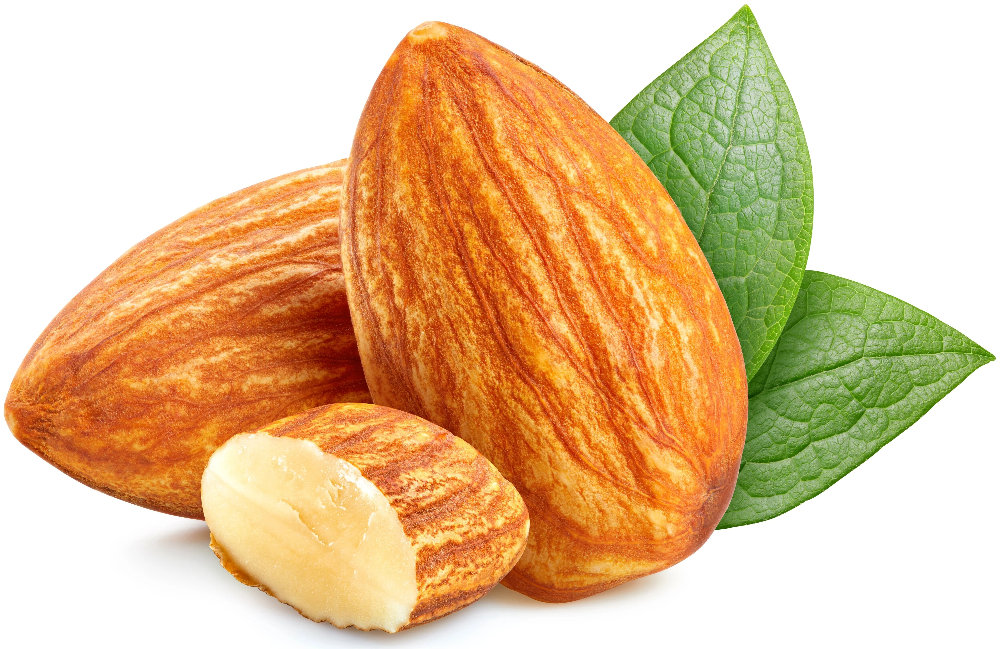

100% Organic
Our almonds are grown organically, ensuring the highest quality and sustainability.

Affordable Pricing
Enjoy premium almonds at prices that won’t break the bank. Quality and affordability combined.
Health Benefits
Almonds are packed with nutrients and offer numerous health benefits. Learn more about their advantages.